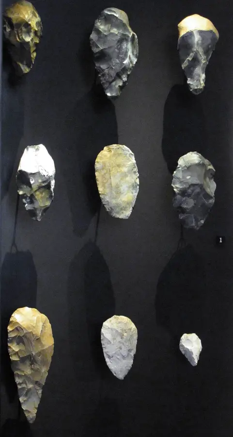
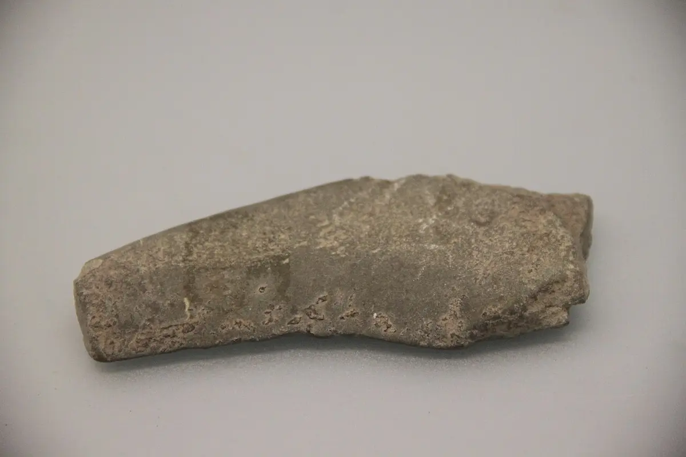
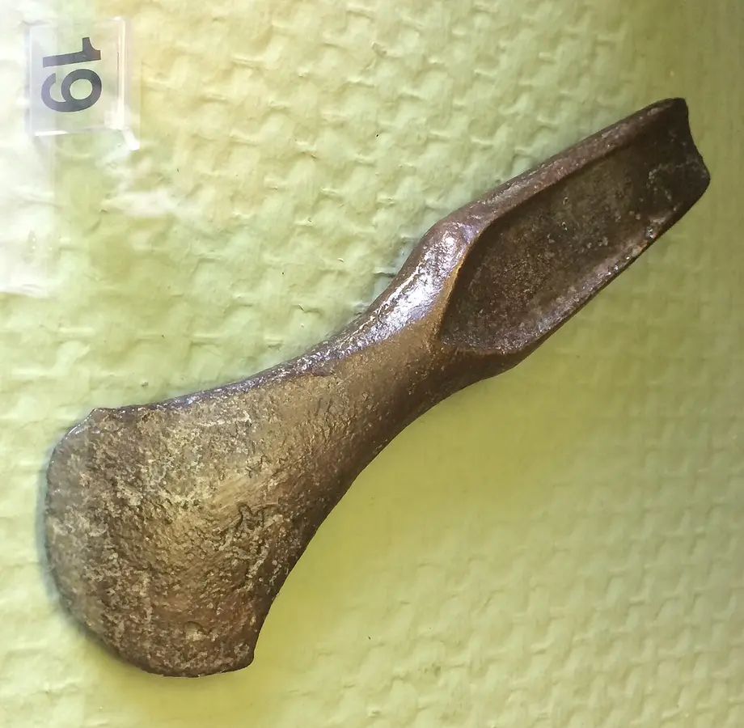
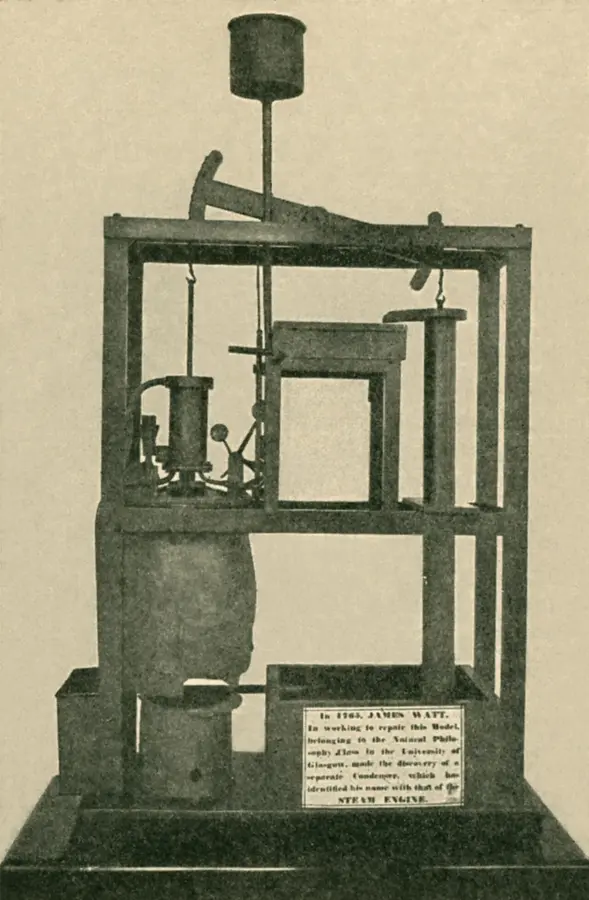
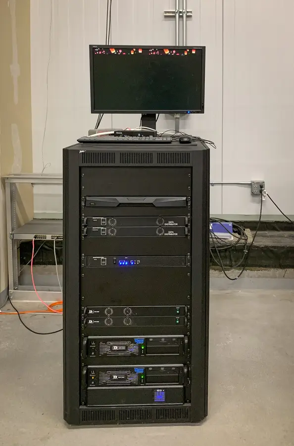
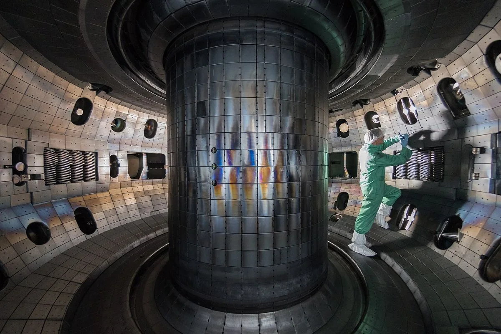
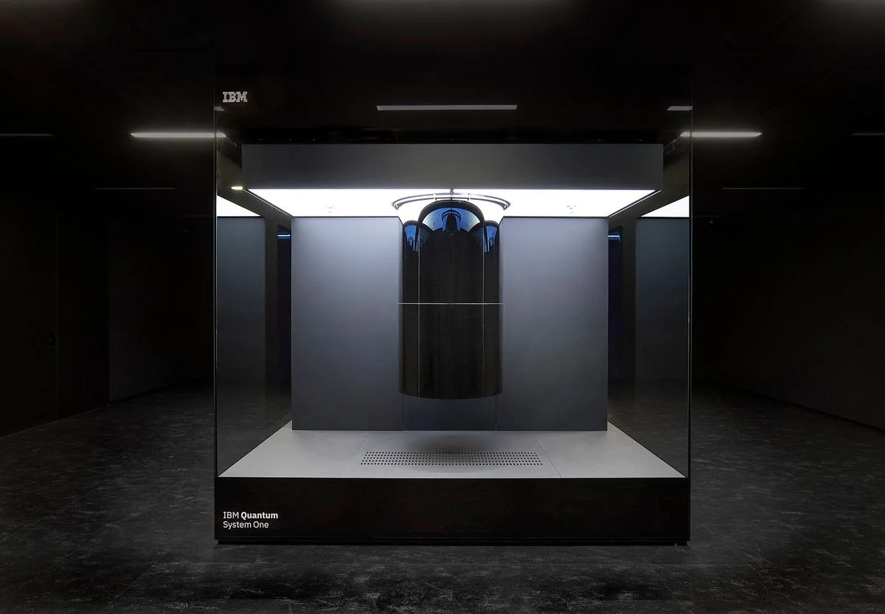

Human civilization is a story of tools, energy, information, and cooperation. Each age changes what people can build, how societies organize, and what problems become possible to solve or dangerous to ignore.
Stone to SteelAgricultureIndustryDigital SocietyFuture Science
140 milestonesOn one timeline, two scales
8 erasCompared as systems
21 artifactsInteractive 3D stops
Interactive evidence lab · Every lesson on one line
The Grand Timeline
From the Big Bang to this year: the milestones the site’s lessons teach, the artifacts you can turn in 3D, Christian history, and the Ages themselves as bands. Ages overlap. Use them as comparison lenses, not worldwide switch dates.
1Choose an AgePress “Zoom to” or click a band.
2Read what changedThe era card below compares the systems.
3Inspect evidenceOpen a 3D model, or follow “In this lesson” to the chapter.
First, notice the scaleAbout 99.7% of this 3.3-million-year span came before agriculture. Switch the timeline to True scale to see it; Deep time stretches the crowded last 0.3% so it can be read.
Early toolmaking → farmingFarming → today
Show
Big Bang — The universe begins hot and dense and starts expanding; its afterglow is still visible as the cosmic microwave background. In the Beginning: Origins of the Universe →
Earth forms — Earth gathers from colliding rock; the Moon likely forms soon after from a giant impact. Earth: A Living Planet →
LUCA: life's common ancestor — Every living thing traces back to one population of simple cells, roughly 4 billion years ago. LUCA: Last Universal Common Ancestor →
Cambrian explosion — Most major animal body plans appear in the fossil record within a few tens of millions of years. Life Invented the Animal →
First forests — Woody trees spread across the land, changing soils, climate and the air. The Evolution of Wood →
Pangaea — Nearly all land is joined in one supercontinent before it rifts apart into today's continents. Pangaea & Continental Drift →
Dinosaurs' extinction — The Chicxulub impact (with Deccan volcanism) ends the age of non-avian dinosaurs. The K-Pg Extinction →
Stone Age — Stone tools, fire, language, migration, art, and survival knowledge. Human culture becomes cumulative: each generation can inherit and improve tools and stories. Open the chapter ↓
Homo erectus — One of the earliest members of the genus Homo — walked upright, made Acheulean stone tools, and likely used fire. A direct ancestor of modern humans.
Counting on bones — Notched tally bones show people recording numbers long before writing. The Story of Numbers →
Ice Age peak — Ice sheets cover much of North America and Europe; sea level is about 120 m lower than today. Pleistocene Field Lab →
Lascaux Cave Art — Painted deep inside a French cave, these detailed animal images — aurochs, horses, deer — show early humans closely studying and recording animal behavior. Scholars see this as evidence of the cognitive shift that preceded domestication and animal husbandry.
Jōmon Pottery — Among the earliest known pottery on Earth — handmade, low-fired clay used for boiling food in Neolithic Japan. A leap in how humans processed nutrition.
Agricultural Age — Farming, herding, storage, villages, irrigation, and food surplus. Settled life supports specialization, property, population growth, and new forms of inequality. Open the chapter ↓
Göbekli Tepe — The world's oldest known temple complex, carved from limestone by hunter-gatherers in southeastern Turkey — before agriculture, before pottery, before cities.
Clay tokens keep the accounts — Quantities, property rights, and debt could be stored outside a person's brain, directly giving birth to arithmetic and early writing.
Oxen pull the plow — Draft animal energy coupled to wooden and copper-tipped plows expanded food production tenfold per human worker, freeing populations for urban crafts, engineering, and governance.
The wheel — Wheels appear in Mesopotamia and Europe, first for pottery and then for carts. Wheel & Axle →
Bronze Age — Metallurgy, writing, cities, trade networks, law codes, and early states. Civilization becomes record-keeping: power can be stored in documents, walls, armies, and accounts. Open the chapter ↓
Ötzi the Iceman — Preserved in Alpine ice for 5,300 years, Ötzi carries a snapshot of Chalcolithic technology: a copper-bladed axe, flint tools, a longbow, woven grass cloak, leather shoes stuffed with insulation, and medicinal herbs.
Writing and base-60 numbers — Sumerian scribes keep accounts in cuneiform and count in sixties, which is why an hour has 60 minutes. The Story of Numbers →
Stonehenge — Neolithic monument in England — a feat of organized labor, celestial alignment, and ceremonial architecture built without metal tools.
Royal Game of Ur — The oldest known board game, excavated from the Royal Tombs of Ur in Mesopotamia. Its rules were later decoded from a Babylonian clay tablet.
Great Pyramid of Giza — Built during the Fourth Dynasty of the Old Kingdom, the Great Pyramid required coordinating tens of thousands of workers, precision surveying, quarrying 2.3 million stone blocks, and a supply chain spanning hundreds of miles.
Sumerian Axe — Cast from copper or bronze in Mesopotamia — the world's first cities. The Sumerians developed metallurgy alongside writing, law codes, and trade networks.
Shadoof — A counterweighted lever used to lift water from rivers and canals onto fields. One of the earliest machines to multiply human labor through mechanical advantage — it extended the reach of Bronze Age agriculture far beyond the floodplain and is still in use…
Hammurabi's law code — Law moved from arbitrary oral royal whims into enduring written statutes that citizens and judges could publicly consult.
Ten Commandments — Given to Moses at Sinai, the Ten Commandments are the foundational moral law of the covenant between God and Israel.
The Tabernacle — The portable sanctuary described in Exodus — a tent-shrine at the center of the Israelite camp during the wilderness period.
Ark of the Covenant — The gold-covered chest described in Exodus housing the stone tablets of the Law, Aaron's rod, and manna. Carried before Israel in battle and placed at the heart of the Tabernacle, it represented the direct presence and covenant of God with his people.
Iron & Classical Age — Stronger tools, wider agriculture, empires, coins, roads, and classical knowledge traditions. Durable metal and large institutions expand what societies can farm, build, conquer, and govern. Open the chapter ↓
The Phoenician alphabet — Literacy moved outside elite temple monopolies and traveled with Mediterranean commerce, giving birth directly to Greek, Latin, Aramaic, Arabic, and Hebrew scripts.
Daniel 2: Nebuchadnezzar's dream — In the Neo-Babylonian period, Daniel 2 imagines a succession of empires as a statue of gold, silver, bronze, and iron mixed with clay. Open Daniel 2 alignment ↓
Daniel 2: bronze, Greece — Greco-Macedonian Empire (c. 331–63 BCE) — Hellenistic military bronze phalanxes and cultural spread.Nebuchadnezzar's Dream of the Statue. The visionary composite statue of Daniel 2: gold head (Babylon), silver chest (Medo-Persia), bronze belly (Greece), and iron legs (Rome) struck by the uncut mountain stone. Illuminated miniature · BnF Français 131 · Public domainIn this lesson:Daniel 2 · Belly & Thighs of Bronze
The Appian Way — Rome begins its first great paved road; roads tie the empire together. The Roads to Rome →
Euclid's Elements — Proof-based geometry and number theory, including infinitely many primes; taught for 2,000 years. The Story of Numbers →
Archimedes — Archimedes explains buoyancy and levers and traps pi between two polygons. Archimedes' Principle →
The Septuagint — Jewish scholars in Alexandria begin translating the Hebrew Scriptures into Greek. How the Bible Reached Us →
Dead Sea Scrolls — Written by the Essene community at Qumran near the Dead Sea, these scrolls include the oldest known manuscripts of the Hebrew Bible — predating the next oldest by 1,000 years.
Eratosthenes measures the Earth — Shadows in two Egyptian cities give Earth's circumference with remarkable accuracy. Measuring the Earth →
Rosetta Stone — A priestly decree carved in three scripts — hieroglyphic, Demotic, and Greek — it became the key that unlocked ancient Egyptian writing in 1822.
Daniel 2: iron, Rome — Roman Empire & Fragmented States — crushing military iron, followed by divided political alliances.Nebuchadnezzar's Dream of the Statue. The visionary composite statue of Daniel 2: gold head (Babylon), silver chest (Medo-Persia), bronze belly (Greece), and iron legs (Rome) struck by the uncut mountain stone. Illuminated miniature · BnF Français 131 · Public domainIn this lesson:Daniel 2 · Legs of Iron & Clay Feet
The Library of Alexandria declines — There is no single proven “collapse year.” Caesar’s Alexandrian War caused a dock fire in 48 BCE, but the scholarly institution survived.
Life of Jesus — Jesus of Nazareth teaches, heals and is crucified in Roman Judea; his followers proclaim the resurrection. The World of Jesus →
Paul's letters — Paul writes to young churches across the Roman world; his letters are the earliest Christian writings we have. Paul's Missionary Journeys →
Pont du Gard aqueduct — Scaled infrastructure sustained concentrated urban populations with abundant running water and sanitation, stabilizing cities of hundreds of thousands.Pont du Gard aqueduct. Roman hydraulic engineers used volcanic pozzolana concrete and precise gravity gradients (1:3000) to deliver 40,000 cubic meters of mountain water daily across 50 km.Pont du Gard · Benh LIEU SONG · CC BY-SA 3.0In this lesson:Era Atlas · Hydraulic Concrete and Gravity Engineering
Edict of Milan — Constantine and Licinius grant Christians legal toleration in the Roman Empire.
Council of Nicaea — Bishops from across the empire meet and produce the first form of the Nicene Creed.
Western Rome falls — 476 CE, the conventional date for the deposition of the last Western Roman Emperor, is often popularized as the start of the "Dark Ages." Modern historians reject this label and designate the period the Early Middle Ages.
Middle Ages — Not a "Dark Age": monasteries, translation houses, universities, cathedrals and trade networks kept and grew knowledge across Europe, the Islamic world, Africa and Asia. Read it in the lesson ↓
Scriptoria and translation houses — Cross-civilizational translation networks safeguarded human learning across imperial collapses, preparing the groundwork for the Scientific Revolution.
Zero becomes a number — Brahmagupta writes rules for calculating with zero and negative numbers. The Story of Numbers →
Armenian Khachkar — A free-standing stone cross-memorial from Haghpat Monastery (UNESCO World Heritage site) in Armenia, ornately carved on three sides with crosses, iconography, and inscription.
Great Schism — The churches of Rome and Constantinople formally divide into Catholic West and Orthodox East.
Fibonacci's Liber Abaci — Hindu-Arabic numerals reach Europe, along with the rabbit puzzle behind the Fibonacci sequence. Fibonacci Sequence →
Renaissance — Recovered classical learning, perspective in art, and new patrons and printers bridge the medieval world to the Scientific Age. Read it in the lesson ↓
Printing Press — Gutenberg's movable-type press made books cheap and fast to reproduce — accelerating the Reformation, Scientific Revolution, and mass literacy across Europe.
Gutenberg Bible — The first major book printed with movable metal type in Europe. How the Bible Reached Us →
Scientific Age — Experiment, measurement, mathematics, telescopes, microscopes, and reproducible knowledge. Knowledge becomes a method: claims are tested against evidence instead of protected by authority alone. Open the chapter ↓
Leonardo's Mona Lisa — Leonardo da Vinci works on the Mona Lisa while filling notebooks with machines and anatomy. Leonardo da Vinci →
Creation of Adam — Michelangelo's fresco on the Sistine Chapel ceiling, commissioned by Pope Julius II. Painted at the peak of the Renaissance, it fuses Christian theology with classical humanism — depicting the moment God breathes life into Adam.
Raphael's School of Athens — Raphael paints the great thinkers of Greece together in the Vatican. The School of Athens →
Reformation begins — Martin Luther's 95 Theses spread by print and start the Protestant Reformation.
Magellan — Ferdinand Magellan led the Spanish expedition that began the first circumnavigation of the globe.
Copernicus puts the Sun at the center — On the Revolutions of the Heavenly Spheres moves Earth out of the middle of the universe. Heliocentrism — The Sun at the Center →
Kepler's laws — Kepler shows planets move in ellipses; Galileo turns a telescope to the sky the same year. Kepler's Laws of Planetary Motion →
King James Bible — The Authorized Version shapes English Bible reading for centuries. How the Bible Reached Us →
Hooke's Micrographia — Scientific truth became mediated through precision optics and instruments, proving that nature is governed by physical laws operating far below normal human sensory thresholds.Hooke's Micrographia flea. Robert Hooke's compound microscope revealed an intricate, hidden microscopic world, coining the biological term "cell" and proving instruments outstrip the human eye.Micrographia · Robert Hooke, 1665 · Royal Society · Public domainIn this lesson:Era Atlas · The Microscope Reveals the Invisible Micro-World
Newton splits light — Newton's prism experiments show white light is a mixture of colors. Newton's Dispersive Prism →
Newton's Principia — The laws of motion and universal gravitation explain falling apples and orbiting moons alike. Newton's Laws of Motion →
First copyright law — Britain's Statute of Anne gives authors, not printers, the right to copy their work. The History of Copyright Law →
Bach's Brandenburg Concertos — Bach dedicates six concertos to the Margrave of Brandenburg. Johann Sebastian Bach →
Vivaldi's Four Seasons — Four violin concertos paint spring, summer, autumn and winter in sound. Antonio Vivaldi →
Linnaeus names and ranks life — Systema Naturae sorts living things into nested groups; later editions give every species a two-part name. Classifying Life: Taxonomy of Every Kingdom →
Euler and e — Euler calculates e to 18 digits and makes it a central number of mathematics. How 𝑒 Was Discovered →
Franklin's kite — Benjamin Franklin shows lightning is electricity. Benjamin Franklin →
Industrial Age — Steam power, factories, railroads, fossil fuels, steel, mass production, and urban labor. Energy from machines multiplies human work and reorganizes economies around production speed. Open the chapter ↓
Watt's steam engine — James Watt's separate condenser makes steam engines efficient enough to power the Industrial Age. From Rocket Clubs to STEAM →
Mozart's Magic Flute — The Magic Flute premieres weeks before Mozart dies, leaving his Requiem unfinished. Wolfgang Amadeus Mozart →
Beethoven's Ninth Symphony — Beethoven, almost completely deaf, premieres the symphony with the Ode to Joy. Ludwig van Beethoven →
Stephenson's Rocket — Overland freight and passenger travel speeds increased by an order of magnitude, unifying regional markets into centralized national and global trade networks.
Telegraph and steam press — For the first time in human history, information traveled faster than the fastest physical horse or locomotive. Market prices, train schedules, and political news became synchronized in real time.
Hokusai's Great Wave — Hokusai's woodblock print becomes one of the most recognized images in art. Katsushika Hokusai →
Faraday's induction — A moving magnet makes electric current: the principle behind every generator. Faraday's Law →
Ada Lovelace's program — Lovelace's Note G sets out an algorithm for Babbage's Analytical Engine: the first published program. Ada Lovelace — The First Programmer →
Brooklyn Bridge opens — Emily Roebling sees her family's bridge through to completion; she is the first to cross it. Emily Roebling →
Tesla's AC motor — Tesla patents the AC induction motor, and alternating current goes on to power the world. Nikola Tesla →
Van Gogh's Starry Night — Van Gogh paints the view from his window at Saint-Rémy. Vincent van Gogh →
Curie discovers polonium and radium — Marie and Pierre Curie find two new elements and name radioactivity. Marie Curie →
Joplin's Maple Leaf Rag — The best-selling rag makes Scott Joplin the King of Ragtime. Scott Joplin →
Modern Day — Electricity, medicine, aviation, nuclear physics, spaceflight, computing, internet, and global systems. Information and energy networks connect civilization into one fast, fragile planetary system. Open the chapter ↓
Quantum physics begins — Max Planck proposes that energy comes in tiny packets, or quanta. Quantum Physics →
A global church — Christianity's center of gravity shifts south: most Christians now live in Africa, Latin America and Asia.
DNA's double helix — Watson, Crick, Franklin and Wilkins reveal how DNA stores genetic information. DNA & Heredity →
The perceptron — Frank Rosenblatt's learning machine is the ancestor of today's neural networks. Perceptron Lab →
ELIZA — Joseph Weizenbaum's chatbot shows how easily people read minds into machines. AI Origins: ELIZA Chatbot →
Sesame Street — Jim Henson's Muppets help teach a generation to read and count. Jim Henson →
Apollo 11 Command Module — The Columbia spacecraft that carried Neil Armstrong, Buzz Aldrin, and Michael Collins to lunar orbit and returned them safely to Earth.
Apollo 11 lands on the Moon — Armstrong and Aldrin walk on the Moon, guided by software led by Margaret Hamilton. How America Got to the Moon →
Apple is founded — Steve Jobs and Steve Wozniak start Apple in a garage; personal computers follow. Steve Jobs →
Deep dives from the Grand TimelineOpen only the systems, era, information, biblical-history, or practice layer you need.
Civilization Systems · Core Lenses
Read the record
Use materials, energy, information, and organization as four interlocking lenses. These categories help us compare large structural transformations without pretending every society changed at the same moment.
How to Read the Ages
An “age” is not a sudden worldwide switch. Stone tools, farming, writing, iron, factories, computers, and satellites all spread unevenly across geography and culture. Different communities have lived with entirely different technologies at the same historical moment.
Still, these labels are invaluable because they identify transformations in the foundational systems human societies use: raw materials, energy capture, information storage, transport speed, and cooperative organization.
Key Principle: Civilization is not a list of isolated dates. It is an evolving stack of systems where each layer unlocks the possibilities and constraints of the next.
Christian History Lens
Christian history begins inside the Roman world during the Iron & Classical period, then spreads through preaching, persecution, councils, monasteries, manuscripts, art, education, missions, reform movements, and global churches.
History Lens: Christianity is both a living faith tradition and a major historical force that shaped law, learning, calendars, art, care for the poor, political power, reform, conflict, and community life across centuries.
Four systems field guide materials · energy · information · organizationComparative Systems Engine
The Four Systems of Civilization
Select any of the four fundamental engines below to see how that specific capability transformed step-by-step from early humanity into modern and hypothesized future eras.
From knapped flint to alloyed bronze, forged iron, industrial steel, silicon semiconductors, and engineered biomaterials — material properties determine what structures can stand, what tools can cut, and what machines can endure heat and friction.
Why Materials Gate Progress: A steam engine cannot be made of bronze because bronze softens under high pressure and heat; an electronic computer cannot be made of forged iron because it requires semiconductor band gaps found only in purified silicon crystals.
Era atlas eight chapters of tools, systems, and turning points
Illustrated Field Guide · Systems & Evidence
Era Atlas & Systems Field Guide
Explore humanity's eight chapters in depth. Each era features its defining surviving tool, its four systems engine, critical historical turning points, and communication breakthroughs.
Chapter 01 of 08 · Stone Age
Flint · Fire · Oral Memory · c. 3.3m–3300 BCE

Acheulean flint hand axes. Early hominins shaped these versatile flint tools with bifacial symmetry, marking a cognitive leap in deliberate geometric planning.Acheulean flint tools · Ismoon · CC BY-SA 4.0
Stone Age: The Deep Foundation
For more than 99% of human existence, our ancestors lived in mobile foraging bands using stone, wood, antler, bone, controlled fire, language, and shared oral memory. Hunting, gathering, cooperative child-rearing, ritual art, and toolmaking shaped flexible, resilient communities.
Culture became cumulative: because humans could teach and imitate complex knapping patterns, each generation inherited and refined the survival toolkits of its ancestors.
Why the name? Knapped stone tools (flint, chert, obsidian) are the era’s most durable surviving artifacts. People also relied extensively on perishable wood, fiber, hide, and sinew, but stone survives for millions of years in the geological record.
🏛️ OrganizationEgalitarian nomadic foraging bands (15–50 individuals), kin networks.
Communication & Symbolic Breakthroughs
Lascaux cave art. Paleolithic cave paintings reveal symbolic thought, seasonal ecological tracking, and the earliest durable recording of cultural knowledge.Lascaux cave art · Prof saxx · CC BY-SA 3.0
Upper Paleolithic · c. 40,000–10,000 BCE
Images Outlast the Storyteller
Early humans ground ochre, charcoal, and minerals to paint animal herds, hand stencils, and geometric signs onto cave walls deep underground. These images carried ritual meaning, tracked animal migration patterns, and established group identity across centuries.
What changed: Meaning could remain fixed in physical space long after the speaker died — humanity’s first step toward durable external memory.
Göbekli Tepe megaliths. Massive T-shaped stone pillars carved with lions, foxes, and vultures represent the earliest known monumental architecture and collective ritual gathering before metallurgy.Göbekli Tepe megaliths · Teomancimit · CC BY-SA 3.0
Pre-Pottery Neolithic · c. 9500 BCE
Megaliths Anchor Communities in Place
Hunter-gatherers coordinated hundreds of workers to quarry, shape, and erect monumental 10-ton limestone pillars decorated with high-relief animal totems. These circular sanctuaries gathered dispersed foraging bands for shared ritual and seasonal cooperation.
What changed: Symbolic and ritual cooperation drove monumental construction, anchoring human groups in place even before settled plant cultivation became dominant.
Seed · Settlement · Surplus · c. 10,000 BCE onward

Neolithic harvesting sickle. Stone blades mounted in horn or wood handles enabled rapid grain harvesting, fueling the agricultural revolution.Neolithic harvesting sickle · Gary Todd · CC0
Agricultural Age: The Settled Landscape
Independent farming revolutions in the Fertile Crescent, Yangtze and Yellow River valleys, Mesoamerica, and the Andes transformed wild grasses into staple grains and domesticated animals into labor partners. Permanent storage of grain created food surpluses that could sustain thousands through non-growing seasons.
Food surpluses made permanent architecture, pottery, weaving, specialized craftsmen, and trading villages possible. But agriculture also concentrated populations, introduced epidemic diseases, created sharp social hierarchies, and led to organized land warfare.
Why the name? Deliberate cultivation of domesticated crops and herding replaced foraging as the dominant calorie engine. The harvesting sickle's silica sheen records the repetitive cutting of cereal stalks.
Neolithic clay tokens & envelope. Before written words, agricultural communities used geometric clay tokens sealed inside clay envelopes (bullae) to count grain quotas and livestock debts.Clay tokens from Susa · Louvre Museum Sb 1932 · Public domain
Fertile Crescent & Early Farming · c. 8000–3500 BCE
Surplus Demands External Quantitative Memory
Farming generated food surpluses, seasonal debts, and livestock exchanges that quickly overwhelmed human biological memory. Long before alphabetic or cuneiform script, Neolithic communities crafted geometric clay shapes—spheres for grain measures, cones for oil, discs for animals. Stored in sealed clay envelopes ("bullae") and stamped with seals, these tokens allowed trading partners to audit contracts.
What changed: Quantities, property rights, and debt could be stored outside a person's brain, directly giving birth to arithmetic and early writing.
Harnessing domesticated oxen and cattle to ard plows transformed the energetic limit of cultivation. By replacing hand hoes and digging sticks with animal draft power, agriculturalists could aerate hard soils, sow larger acreages, and generate the predictable caloric surpluses that sustained dense city populations.
What changed: Draft animal energy coupled to wooden and copper-tipped plows expanded food production tenfold per human worker, freeing populations for urban crafts, engineering, and governance.
Alloy · Writing · State · c. 3300–1200 BCE

Cast bronze axe. Melting and alloying copper with tin produced resilient, resharpenable metal tools and weapons, establishing long-distance trade routes.Bronze axe · Bjoertvedt · CC BY-SA 4.0
Bronze Age: The First Cities and States
Bronze—an alloy typically of roughly 90% copper and 10% tin—demanded a vast international supply chain because copper and tin deposits were rarely found together. Tin traveled thousands of miles across deserts and maritime routes from Central Asia and Cornwall to the smelters of Mesopotamia and the Levant.
This interdependence stimulated the rise of bureaucratic palace economies, formal written law codes (like Hammurabi's Code), monumental stone temples, professional standing armies, and comprehensive accounting systems capable of coordinating tens of thousands of workers.
Why the name? Cast bronze was the high-performance material that defined military edge, agricultural axes, carpentry tools, and prestige royal wealth.
Archaic Sumerian cuneiform. Pressing reed styluses into wet clay created wedge-shaped signs for grain receipts, laws, and royal decrees — the world’s earliest writing system.Sumerian cuneiform · Louvre Museum AO 2649 · Public domain
Bronze Age Mesopotamia · from c. 3200 BCE
Clay and Stylus Launch the First Script
Sumerian temple administrators in cities like Uruk and Ur pressed cut reeds into river clay to record grain surpluses, livestock herds, and labor debts. Firing clay tablets created an indestructible archive that survived millennia buried in earth.
What changed: Contracts, administrative accounting, and historical memory no longer depended on biological memory or individual lifespans.
Abbott Papyrus. Papyrus documents recorded court proceedings, medical texts, and tax inventories, allowing complex states to administer vast territories.Abbott Papyrus · Captmondo · CC BY-SA 3.0
Ancient Egypt · from c. 3000 BCE
Papyrus Makes Information Portable
Egyptians pressed pith strips from the papyrus plant into lightweight, rollable writing sheets. Scribes used scrolls for taxes, laws, medicine, literature, religion, and state administration.
What changed: Records became lighter and far easier to copy, transport across hundreds of miles, and store in archives than stone inscriptions.
Code of Hammurabi stele. Carving 282 legal rulings onto an enduring diorite monument established public law codes, standardizing justice across a territorial empire.Stele of Hammurabi · Louvre Museum Sb 8 · Public domain
Babylon · c. 1750 BCE
Monumental Law Codifies State Justice
King Hammurabi of Babylon erected monumental carved stelae in public temple courtyards. Inscribed in Akkadian cuneiform beneath an image of the king receiving authority from Shamash, the code established standardized penalties, property protections, and trade regulations.
What changed: Law moved from arbitrary oral royal whims into enduring written statutes that citizens and judges could publicly consult.
Iron ore was abundant worldwide, but required far higher furnace temperatures and blacksmith forging. Once iron smelting was mastered, metal tools were no longer luxury monopolies of royal palace elites; common farmers plowed tough clay soils with iron-tipped shares, and large citizen armies equipped with iron swords transformed warfare.
Standardized silver and bronze coinage, paved road systems, multi-tiered bureaucratic administration, and codified legal traditions allowed empires (Persian, Hellenistic, Roman, Han, Gupta) to govern millions of subjects across continents.
Why the name? Iron democratized metallurgy, while classical knowledge traditions codified philosophy, mathematics, civic government, and transcontinental trade networks.
Two Turning Points — and One Important Historical Correction
The change from the classical world to the Middle Ages was gradual, regional, and deeply nuanced. These milestones are memorable guideposts, not an instant worldwide plunge from knowledge into ignorance.
The Library of Alexandria. Founded under the Ptolemaic dynasty in Egypt, the universal research library held hundreds of thousands of papyrus scrolls; its decline spanned centuries through warfare, lost patronage, and institutional decay.Library of Alexandria · O. Von Corven · Public domain
The Library of Alexandria Declines
There is no single proven “collapse year.” Caesar’s Alexandrian War caused a dock fire in 48 BCE, but the scholarly institution survived. Its royal quarter was devastated during warfare under Aurelian in 272 CE, and further destruction followed under Diocletian in 297 CE. The Serapeum temple complex was destroyed in 391 CE.
The larger systems lesson is that institutional memory is fragile: civilizational knowledge can erode through repeated budget cuts, political instability, civil conflict, and institutional neglect — not only through one dramatic Hollywood blaze.
476 CE, the conventional date for the deposition of the last Western Roman Emperor, is often popularized as the start of the "Dark Ages." Modern historians reject this label and designate the period the Early Middle Ages.
While urban populations and long-distance trade contracted in parts of Western Europe, the Byzantine Empire and the Islamic Golden Age flourished, building vast libraries in Baghdad, Cairo, and Córdoba. In Europe, monastic scriptoria preserved classical texts, copied biblical codices, developed agricultural crop rotation, and laid the foundations for the first European universities.
Phoenician maritime merchants discarded cumbersome syllabaries with hundreds of signs in favor of roughly 22 consonant symbols. Anyone could learn the alphabet in weeks rather than spending a lifetime training as an elite palace scribe.
What changed: Literacy moved outside elite temple monopolies and traveled with Mediterranean commerce, giving birth directly to Greek, Latin, Aramaic, Arabic, and Hebrew scripts.
Theatre of Epidaurus. Greek theatres reflect a society that valued civic participation, shared acoustic performances, and rigorous philosophical debate.Theatre of Epidaurus · TimeTravelRome · CC BY 2.0
Ancient Greece · c. 600–300 BCE
Theater, Mathematics, and Structured Debate
Greek city-states pioneered public drama, rhetorical civic assemblies, and deductive mathematical proofs. Theaters brought thousands together for shared civic reflection, while Euclidean geometry showed that truth could be established by logical deduction from axioms.
What changed: Arguments became formal public structures that citizens and scholars could systematically inspect, test, and challenge.
Engineered Roman road. Roman paved roads were the high-speed data arteries of antiquity, enabling imperial couriers, trade caravans, and the rapid spread of early Christianity.Roman road · Hugh Venables · CC BY-SA 2.0
Roman Empire · c. 300 BCE–400s CE
Roads Move Orders, News, and People
Rome linked three continents with more than 50,000 miles of paved highways, bridges, way-stations, and relay couriers (the cursus publicus). Imperial dispatches, merchant cargo, and Christian missionaries like the apostle Paul traveled along the same physical infrastructure.
What changed: Communication became infrastructure. Governing a vast empire required predictable travel times and synchronized administrative authority.
Pont du Gard aqueduct. Roman hydraulic engineers used volcanic pozzolana concrete and precise gravity gradients (1:3000) to deliver 40,000 cubic meters of mountain water daily across 50 km.Pont du Gard · Benh LIEU SONG · CC BY-SA 3.0
Roman Gaul · 1st Century CE
Hydraulic Concrete and Gravity Engineering
Hydraulic Roman concrete (incorporating reactive volcanic ash) allowed engineers to construct monumental three-tier arched bridges that endured underwater for two millennia. Gravity aqueducts powered public fountains, bathhouses, and grain mills across the empire.
What changed: Scaled infrastructure sustained concentrated urban populations with abundant running water and sanitation, stabilizing cities of hundreds of thousands.
Monastic scriptoria in Ireland, Britain, and Europe copied Latin and biblical texts onto durable vellum. Across Baghdad, Cairo, and Samarkand, scholars translated Greek, Persian, and Sanskrit treatises, invented algebra, perfected optical lenses, and built hospital universities.
What changed: Cross-civilizational translation networks safeguarded human learning across imperial collapses, preparing the groundwork for the Scientific Revolution.
Rebirth · Humanism · Perspective · Print · c. 1400–1600
Originating in flourishing Italian mercantile city-states and diffusing across Europe, the Renaissance renewed direct study of Greek, Hebrew, and Roman original texts while introducing revolutionary mathematical techniques to art, anatomy, engineering, and cartography. It grew directly from medieval university debates, maritime trade wealth, and manuscript exchanges with the Islamic world.
HumanismScholars studied language, history, ethics, and primary sources to understand human moral agency and civic responsibility.
Perspective & AnatomyArtists combined geometry, dissection, light, and optics to depict physical reality with unprecedented fidelity.
Movable PrintMetal type accelerated the circulation of maps, technical diagrams, theological controversies, and empirical discoveries.
Empirical ObservationPolymaths like Leonardo da Vinci joined art to mechanical invention, while astronomers began measuring celestial mechanics with instruments.
Measure · Instrument · Test · Revise · c. 1543–1780Galileo's surviving telescopes. Telescopes shifted our understanding of the universe from philosophical speculation to empirical, instrument-mediated observation.Galileo's surviving telescopes · Zde · CC BY-SA 4.0
Scientific Age: The Method of Inquiry
The Scientific Revolution introduced a new standard of reliable truth: systematic observation, mathematical formulation, instrument-assisted measurement, controlled experimentation, and peer verification. Claims were no longer accepted merely because an ancient authority had written them.
New optical instruments—telescopes and microscopes—revealed moons orbiting Jupiter and living micro-organisms in a drop of water, showing that physical reality extends far beyond ordinary human senses.
Why the name? Reliable knowledge became grounded in reproducible scientific method, empirical instruments, and public debate rather than tradition or authority alone.
🏛️ OrganizationScientific societies (Royal Society, Académie des Sciences), sovereign nation-states.
Communication & Observation Breakthroughs
Gutenberg Museum press. Movable metal type enabled the mass production of books, shattering information monopolies and accelerating the Reformation and Scientific Revolution.Gutenberg Museum press · dronepicr · CC BY 2.0
Renaissance & Print Revolution · from 1440s
Printing Multiplies Words; Art Multiplies Vision
Johannes Gutenberg synthesized movable lead-alloy type, oil-based ink, rag paper, and the screw press into a mechanized production system. Books that once took a monastic scribe a full year to hand-copy could now be printed in hundreds of identical copies within days.
What changed: Identical scientific texts, mathematical tables, vernacular Bibles, and technical diagrams could circulate widely, creating a shared pan-European reading public.
Using a compound microscope with dual lenses and a water-globe condenser, Robert Hooke examined cork cells, insect eyes, and peacock feathers. Published by the Royal Society, Micrographia captivated European scholars with stunning foldout engravings of things invisible to human eyes.
What changed: Scientific truth became mediated through precision optics and instruments, proving that nature is governed by physical laws operating far below normal human sensory thresholds.
Steam · Steel · Fossil Energy · c. 1760–1900

Newcomen engine model studied by Watt. Steam engines converted heat into mechanical work, replacing muscle and water power and launching the Industrial Revolution.Newcomen engine model studied by Watt · Public domain
Industrial Age: The Mechanical Multiplier
The Industrial Revolution marked the greatest thermodynamic rupture in human history. For the first time, human civilization was no longer limited by the annual flow of biological solar energy (crops for muscles and wood for fires). By burning millions of years of ancient solar energy stored in underground coal seams, heat engines multiplied human physical labor by thousands of times.
Concentrated mechanical power created the modern factory system, transcontinental railroads, steamships, Bessemer steel foundries, and rapid urbanization. It generated unprecedented material wealth, life-saving medicines, and public sanitation alongside dangerous factory labor, imperial exploitation, urban squalor, and the beginning of global fossil carbon emissions.
Why the name? Powered machinery, standardized interchangeable parts, chemical mass production, and mechanical transport replaced craft workshops as the dominant engine of human labor.
Hughes printing telegraph. The electric telegraph decoupled communication from physical transportation, allowing information to travel instantly over vast distances.Hughes printing telegraph · Ambanmba · Public domain
Industrial Era · 1830s–1900
Telegraphy and the Mass Press
Electrical telegraph networks sent pulses through copper wires at near the speed of light. Simultaneously, steam-powered rotary presses printed tens of thousands of newspapers per hour, while rail networks distributed them across nations daily.
What changed: For the first time in human history, information traveled faster than the fastest physical horse or locomotive. Market prices, train schedules, and political news became synchronized in real time.
Stephenson's Rocket locomotive. Winning the Rainhill Trials in 1829 with its multi-tube boiler, the Rocket inaugurated intercity steam railways and collapsed overland transit times.Stephenson's Rocket · Science Museum London · CC BY-SA 3.0
Steam Transport Revolution · 1829 onward
Railroads Collapse Continental Travel Times
By coupling coal-fired steam pressure to iron rails, Stephenson's Rocket achieved speeds of nearly 30 miles per hour. Within four decades, thousands of miles of iron and steel tracks spanned North America, Europe, and India, synchronizing national economies and moving heavy cargo at unprecedented volume.
What changed: Overland freight and passenger travel speeds increased by an order of magnitude, unifying regional markets into centralized national and global trade networks.
Electricity · Code · Network · c. 1900–Present

Modern server rack. Data centers form the physical infrastructure of the internet, processing and storing the massive amounts of data that drive modern planetary society.Modern server rack · Tony Webster · CC BY 2.0
Modern Day: The Information Age
Today, human civilization operates as one tightly coupled planetary system running on electricity, microchips, and communication protocols. The digital computer is not merely another tool; it is the universal simulator and automated controller for almost every other machine on Earth — from GPS satellites and agricultural tractors to medical MRI scanners and container ships.
This networked world grants unprecedented capabilities: humanity has eradicated smallpox, sequenced the human genome, walked on the Moon, and created instant planetary knowledge retrieval. But it also creates immense fragility: a single undersea fiber cable severance, semiconductor supply bottleneck, or power grid failure can halt continental economies in minutes.
Why the name? Economic, political, and scientific power depends on the rapid generation, computation, encryption, and transmission of digital information.
⚡ EnergyAC electric grids, internal combustion petroleum, nuclear fission, solar PV, wind.
📜 InformationTransistor logic, packet networks, satellite relays, World Wide Web, global cloud.
🏛️ OrganizationMultinational consortia, global trade treaties, internet protocols, international science.
Communication & Computational Breakthroughs
Apollo 11 television broadcast. The Apollo Moon landing demonstrated the power of planetary broadcast networks, uniting an estimated 650 million viewers simultaneously.Apollo 11 television broadcast · NASA · Public domain
Modern Media Era · 1870s–1970s
Sound and Moving Images Enter the Home
Telephones allowed instant personal two-way speech across continents. Broadcast radio, cinematic film, and television created shared national and global cultural experiences. In July 1969, hundreds of millions witnessed live television of humans walking on another celestial body.
What changed: Historical events could be experienced synchronously by planetary audiences, reshaping politics, art, advertising, and collective human memory.
ENIAC electronic computer. Early electronic computers like ENIAC executed thousands of calculations per second, launching the digital automation of information.ENIAC · U.S. Army photograph · Public domain
Digital Network Era · 1940s–Present
Computing Becomes a Global Network
Room-sized electronic vacuum-tube mainframes evolved through silicon microchips into personal home computers, pocket smartphones, and global cloud data centers. Packet-switched protocols (TCP/IP) linked computers across borders into one decentralized web.
What changed: Human knowledge became instantly copyable, searchable, programmable, and distributable at light speed across the planet.
John Bardeen, Walter Brattain, and William Shockley created the first working solid-state amplifier using germanium and gold foil contacts. By amplifying electrical currents without heating filaments in glass bulbs, the transistor shrunk switches by orders of magnitude, eventually packing billions of transistors onto a single silicon chip.
What changed: Computation moved from room-sized military machinery into portable pocket devices, enabling microprocessors, smartphones, and planetary software networks.
Possible · Powerful · Uncertain · 21st Century & BeyondJames Webb Space Telescope mirrors. Operating 1 million miles from Earth at the Sun-Earth L2 Lagrange point, the 18 gold-coated beryllium hexagonal segments capture infrared light from the first galaxies, exemplifying humanity's transition to a spacefaring species.JWST mirrors · NASA / Chris Gunn · Public domain
Hypothesized Ages to Come Through Science
Future ages are not historical guarantees. They are science-grounded hypotheses based on frontier research. Each potential age offers extraordinary civilizational power alongside profound ethical, ecological, and governance risks. The defining question of the next age will not be whether we can invent new powers, but whether we have the moral wisdom to govern them.
AI & Automation Age Autonomous machine intelligence handles scientific modeling, software design, medical diagnosis, and physical logistics.
Biotechnology Age CRISPR gene editing, synthetic cellular biology, mRNA medicine, and bio-manufacturing rewrite health and materials.
Clean Fusion & Energy Age Commercial nuclear fusion, deep geothermal, advanced fission, and ultra-high-density storage eliminate fossil carbon.
Spacefaring Civilization Age Reusable orbital flight, lunar industrial bases, asteroid mineral mining, and permanent planetary science outposts.
Climate Restoration Age Atmospheric carbon removal, ecosystem rewilding, resilient circular economies, and geo-engineered thermal stability.
Quantum Information Age Quantum sensors, uncrackable entanglement cryptography, and molecular quantum simulation transform discovery.
Neurotechnology Age High-bandwidth brain-computer interfaces and cognitive neural prosthetics raise deep questions of identity and human agency.
Planetary Stewardship Age Civilization establishes cooperative governance to protect Earth as one unified, resilient, living system.
⚡ EnergyCommercial fusion, space solar arrays, advanced geothermal, hydrogen.
📜 InformationQuantum computing, neural-machine interfaces, autonomous AI synthesis.
🏛️ OrganizationPlanetary risk governance, orbital settlements, decentralized bio-ethics treaties.
Frontier Scientific Breakthroughs

Tokamak magnetic fusion vessel. Superconducting magnetic coils confine 100-million-degree deuterium-tritium plasma, aiming to harness clean stellar fusion energy without long-lived radioactive waste.Fusion research tokamak · US DOE / General Atomics · Public domain
Clean Fusion Energy Frontier
Harnessing the Fire of the Stars
Magnetic confinement fusion confines hydrogen isotopes heated past 100 million Celsius—hotter than the core of the Sun. Unlike fossil fuel combustion or uranium fission, fusion produces no greenhouse gases and no long-lived high-level radioactive waste, using seawater hydrogen as fuel.
What changes: Energy scarcity ends. Civilization gains a virtually limitless, baseload, zero-carbon energy engine capable of powering planetary carbon capture and seawater desalination.

Quantum dilution cryostat. Dilution refrigerators cool superconducting quantum processors to 15 millikelvin (colder than deep space) to preserve quantum coherence, superposition, and entanglement.IBM Quantum cryostat · Fraunhofer / IBM · CC BY-SA 4.0
Quantum Information Frontier
Superposition Beyond Binary Bits
Rather than switching between discrete 0s and 1s, quantum processors exploit quantum superposition and entanglement to evaluate complex multidimensional state spaces simultaneously. Cryogenic refrigerators chill superconducting circuits close to absolute zero to prevent thermal noise from destroying quantum states.
What changes: Unsolvable problems in molecular chemistry, room-temperature superconductor discovery, enzyme catalyst design, and cryptographic systems become computable.
Adapted from an ancient bacterial immune defense system against phages, CRISPR-Cas9 allows molecular biologists to program RNA guides that direct an enzyme to cut and edit specific genomic loci. Synthetic biology is expanding from medicine into drought-resistant crops, bio-cements, and living chemical factories.
What changes: Biological evolution shifts from random natural selection over millennia to intentional genetic editing, demanding unprecedented ethical and governance frameworks.
Communication systems chronology nine leaps in how ideas survive and travel
Illustrated Chronology · Communication Systems
How Humanity Learned to Store and Share Ideas
Every breakthrough in human communication loosened a physical barrier: biological memory, spatial distance, transmission speed, elite scribal monopoly, or computational complexity. Filter by medium or jump directly to its era chapter.
Systems Question: Who could create information, who could receive it, how far could it travel, and how long could it survive?
Filter:
LEAP 01c. 40,000 BCE
Paleolithic Cave Art
⚡ Overcame Biological Memory
Ochre and charcoal paintings on rock walls allowed cultural knowledge, animal tracking lore, and ritual meaning to outlast the mortal life of the human storyteller.
LEAP 02c. 8,000 BCE
Neolithic Clay Tokens
⚡ Overcame Mental Math Limits
Geometric clay tokens (cones, spheres) stored in sealed bullae allowed agricultural trading partners to audit grain quantities and livestock debts outside human memory.
LEAP 03c. 3,200 BCE
Cuneiform & Papyrus Scrolls
⚡ Overcame Verbal Governance
Reed stylus impressions in clay and ink on papyrus enabled contracts, tax records, legal codes, and epic literature to coordinate multi-city territorial states.
LEAP 04c. 1,050 BCE
Phonetic Alphabet & Roads
⚡ Overcame Scribal Monopolies
A 22-letter phonetic sound alphabet democratized literacy across classes, while paved imperial highways synchronized military and civil governance across continents.
LEAP 05c. 500–1400 CE
Scriptoria & Translation Houses
⚡ Overcame Civilizational Collapse
Monastic scriptoria and Islamic houses of wisdom hand-copied, translated, and synthesized Greek, Persian, and Sanskrit scientific texts, preserving knowledge across empires.
LEAP 061440s CE
Gutenberg Movable-Type Press
⚡ Overcame Hand-Copying Cost
Mechanized lead type and screw presses allowed thousands of identical books, maps, and pamphlets to circulate, democratizing knowledge and fueling the Scientific Revolution.
LEAP 071830s–1900
Electric Telegraph & Steam Press
⚡ Overcame Physical Travel Speed
Electrical wire signals decoupled message speed from horse and train travel, synchronizing global stock markets, railroad signals, and international news in real time.
LEAP 081940s–1970s
Broadcast Media & ENIAC
⚡ Overcame Human Calculation Limits
Television created shared planetary live audiences (Apollo 11), while electronic vacuum-tube and transistor computers automated scientific modeling and ballistics.
LEAP 091990s–Present
Global Internet & Machine Intelligence
⚡ Overcame Geographic & Synthesis Limits
Fiber-optic packet switching linked planetary devices into a universal knowledge network; deep neural models automated reasoning, synthesis, and code generation.
Daniel 2 alignment Neo-Babylonian period · c. 605–539 BCE
Assessment & Inquiry · Check Your Understanding
Practice & Debate Studio
Test your mastery of historical systems thinking, then explore three Socratic debate prompts on energy, information, and ethical power.
Systems Mastery Check
Answer the four scenario questions below to verify that you are reading history as an evolving architecture of interlocking systems.
Score: 4/4 — Excellent Systems Thinking!
Socratic Debate Studio
Choose one of the core questions below for classroom discussion, seminar debate, or reflective writing:
Prompt 01 · Energy
The Energy Trap
Can a high-tech civilization make a complete transition away from fossil carbon without reducing living standards or economic complexity? What historical lessons can we draw from past energy shifts?
Consider energy density of solar/wind vs. coal and nuclear.
How did pre-industrial civilizations cope with wood fuel shortages?
Prompt 02 · Information
Truth and Bandwidth
Does expanding information bandwidth automatically create a more enlightened society? Compare the social disruptions of the 15th-century printing press to the 21st-century social web and AI.
The printing press led to rapid scientific diffusion, but also religious wars.
How does automated AI synthesis alter the nature of intellectual trust?
Prompt 03 · Ethics
Power vs. Moral Wisdom
“A powerful future is not automatically a wise future.” Which emerging scientific power (genetic editing, artificial general intelligence, or geo-engineering) requires the strictest societal governance?
What happens when technology advances faster than moral institutions?
Who should decide the rules of planetary stewardship?